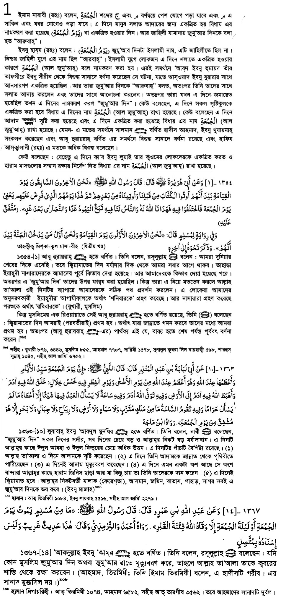
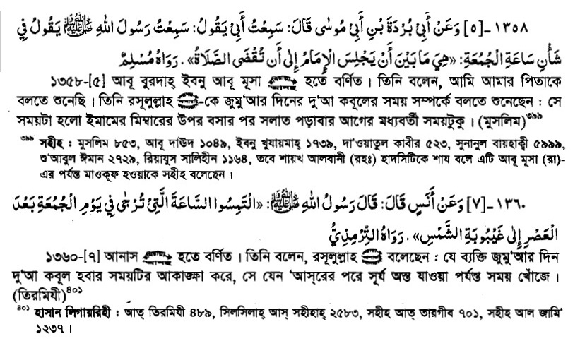
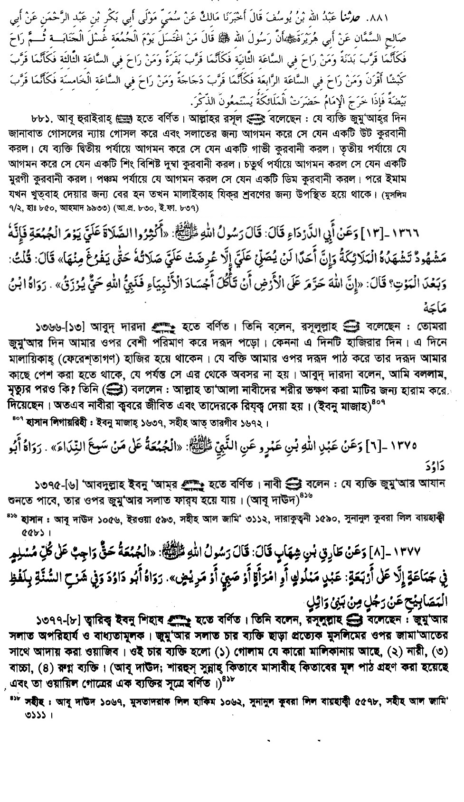
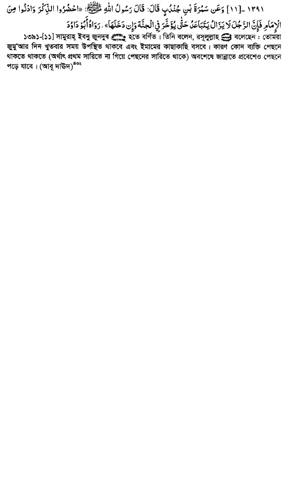
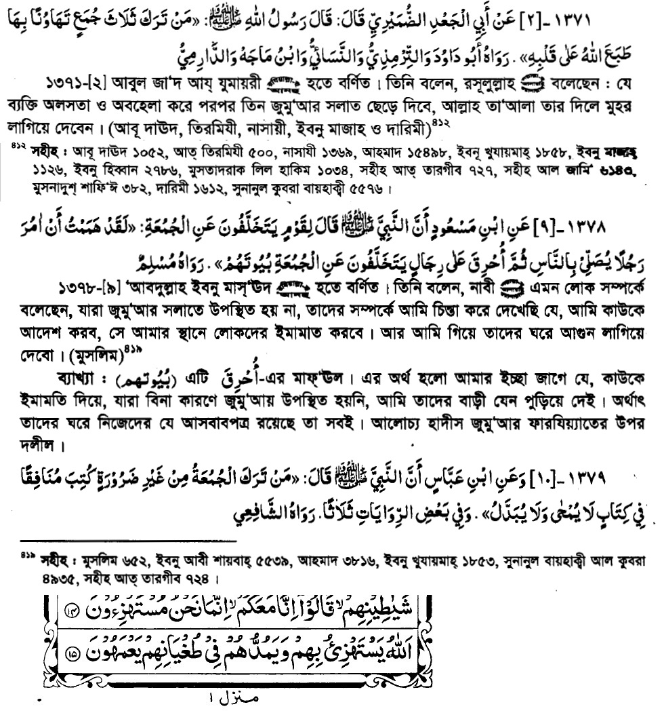
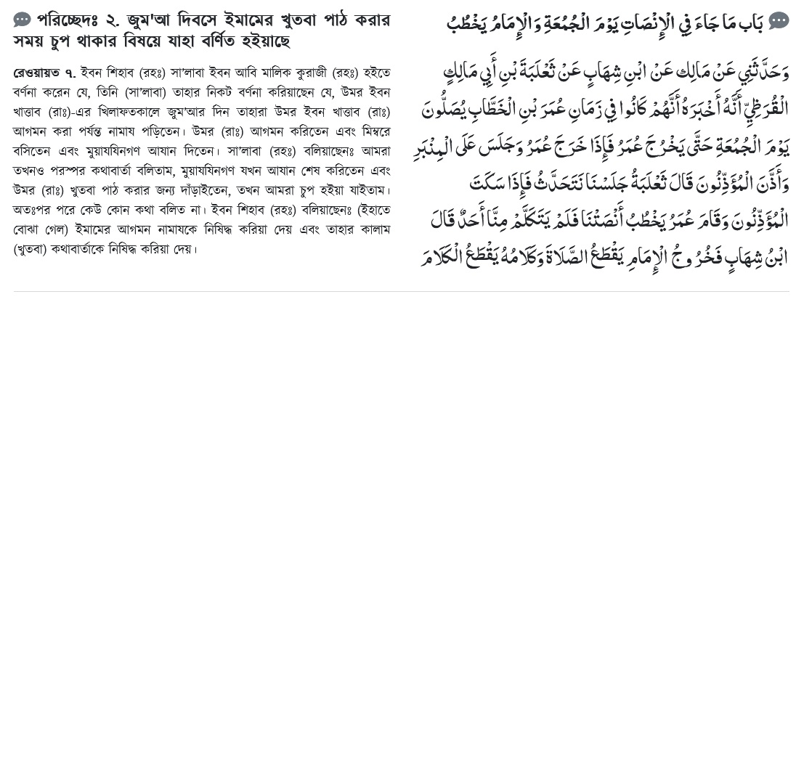
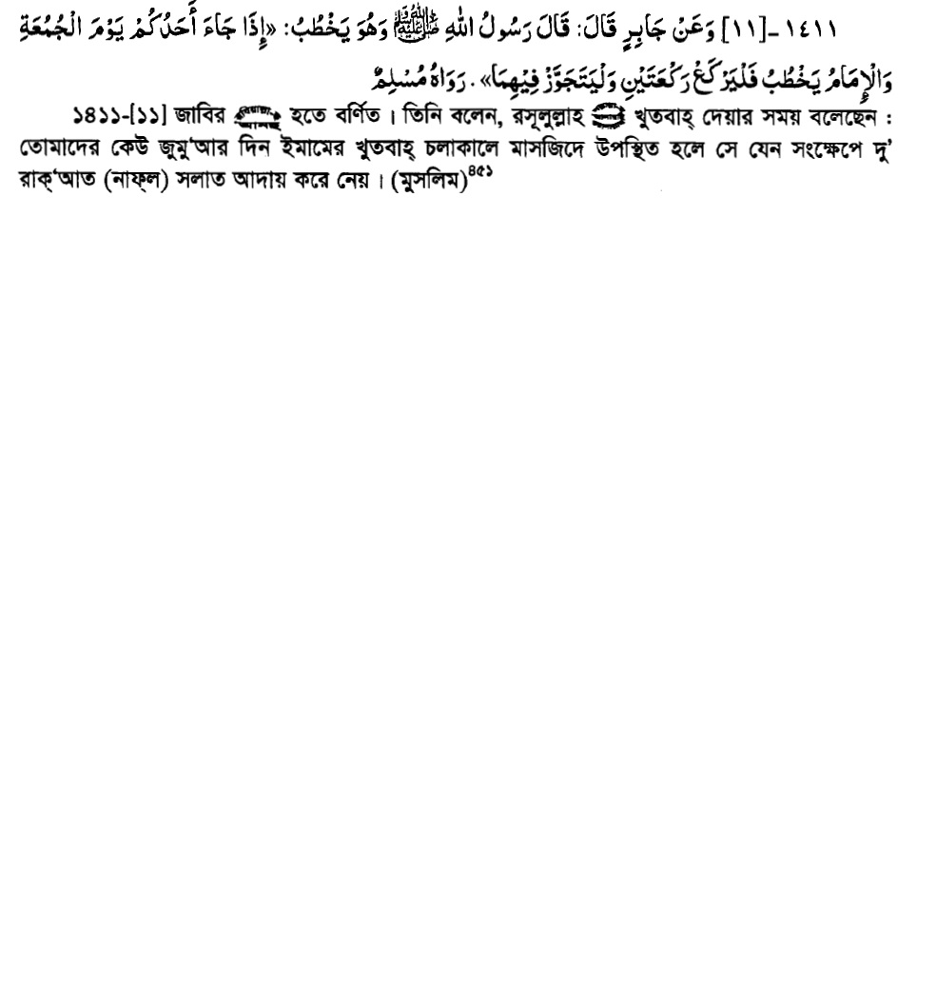

Notes of Quan & Hadith
My Memorized Ayat
Notes of Quan & Hadith
সূচীপত্র
বিশেষ বিষয়
১.নামাজ
২. আল্লাহ রব্বুল আলামীন
৩. দোয়া, মোনাজাত ও তাসবীহ-তাহলীল
৪. মাস সম্পর্কে
৫. জানাজা
৬. কিছু আমল
৭. সদক্বা
নবিজী ছল্লাল্লাহু আলাইহি ওয়া সালাম
১. নামাজ
১. আলোচনা
২. জুমআ’র নামাজ
১. আলোচনা
২. দোয়া কবুলের সময়।
৩. শুক্রবারের কিছু আমল
৪. জুমআ’র নামাজ ত্যাগের পরিণতি
৫. জুমআ’র নামাজের খুতবা
নামাজ
জুমআ’

২. দোয়া কবুলের সময়

৩. শুক্রবারের কিছু আমল
 
৪. জুমআ’র নামাজ ত্যাগের পরিণতি

৫. জুমআ’র নামাজের খুতবা
 
২.